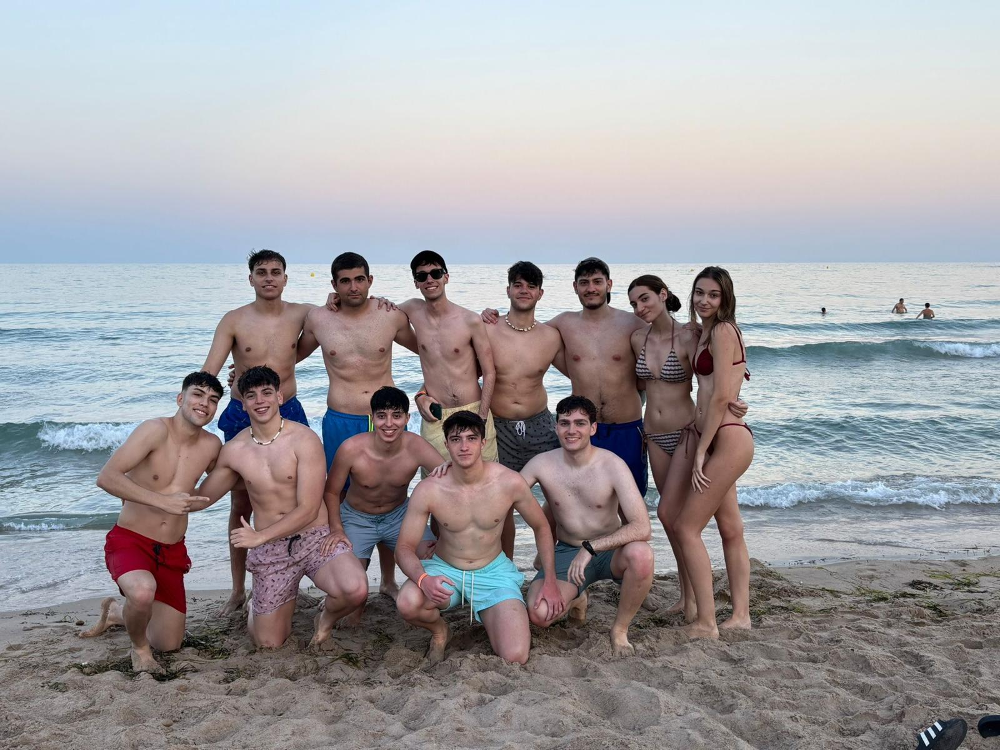
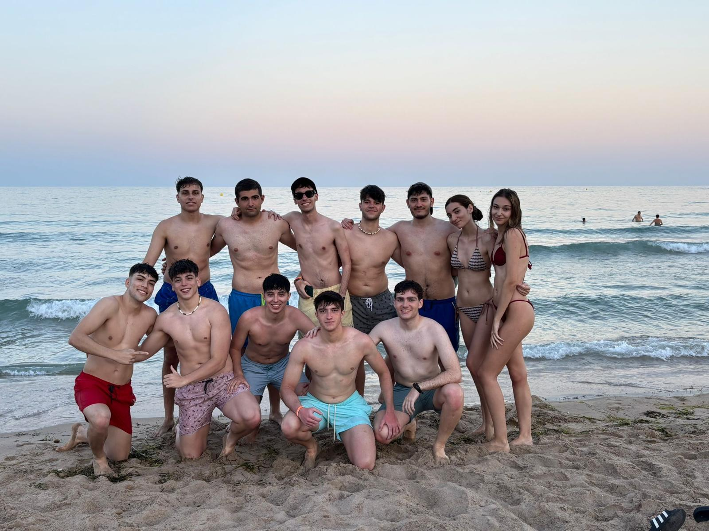
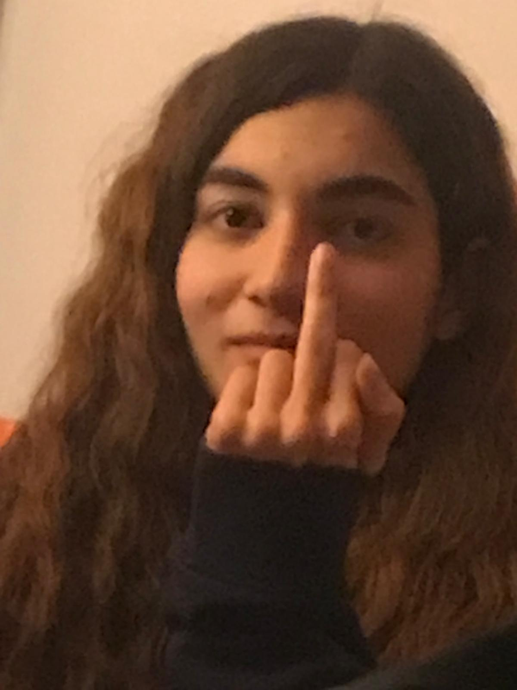
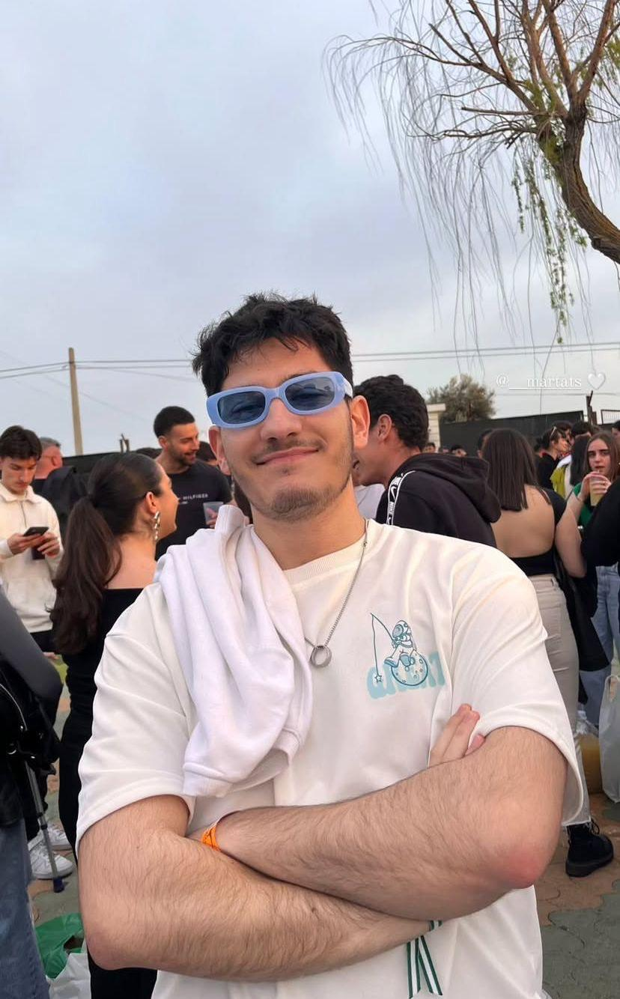
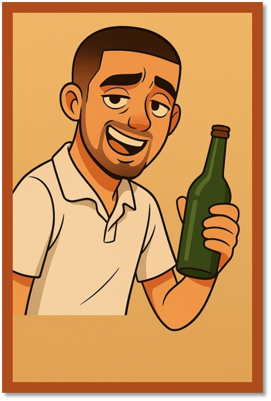
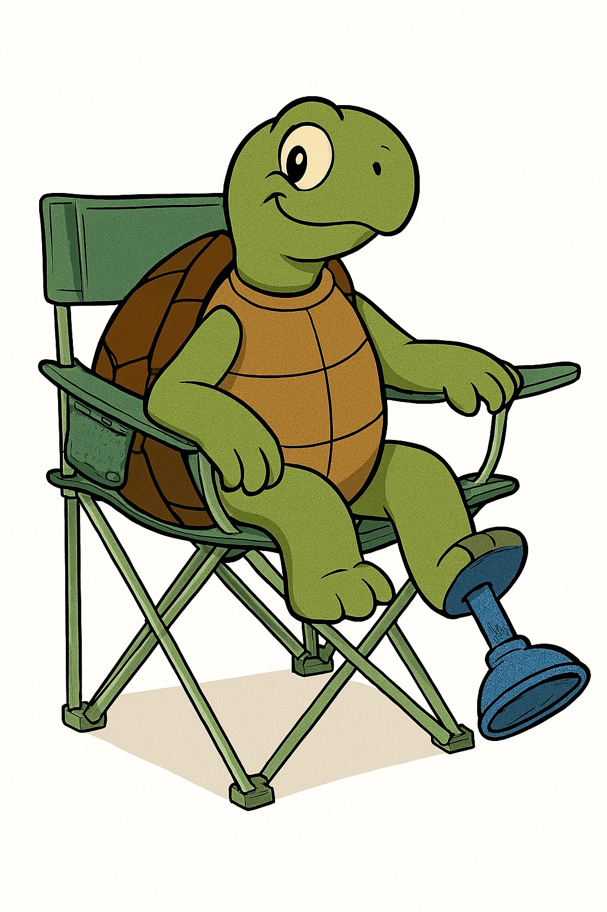
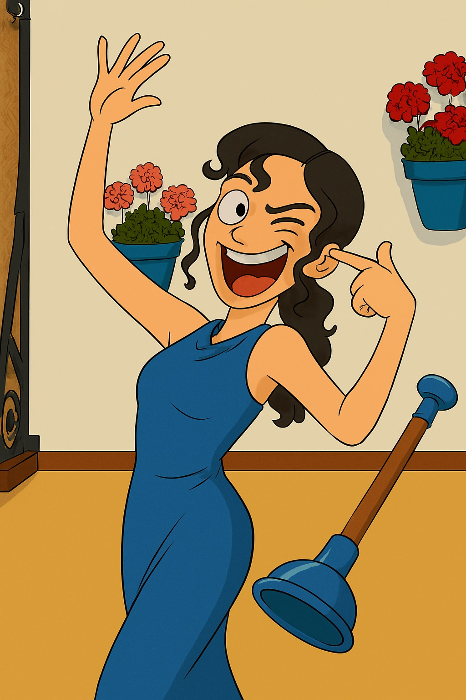
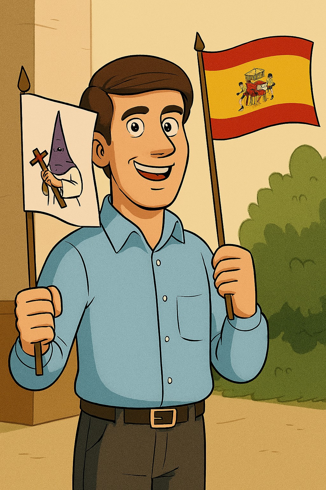
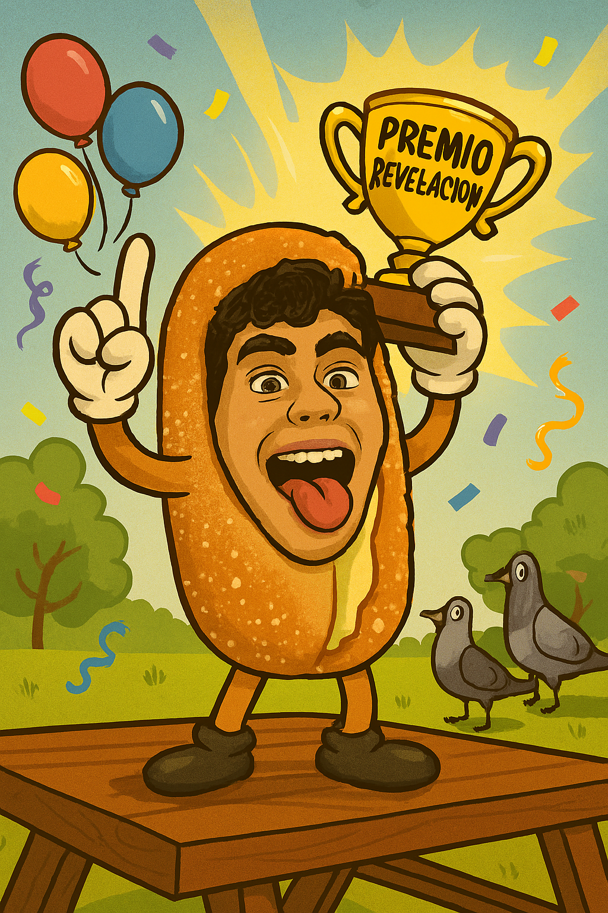

Participantes
Asieras

Rulillas

Darawayas

Ivanpechotes
DaniGG

Lusilu

Almansa

Robertuki

Toñaco

Manolo

Kastor
Maria

Gamepro
El Enano

Poru

Ikardo

Fermoriv
Lab el Viejo
×

Categorías
Borracho del año
Fiestero del año
Viejero del año
Palabra/Frase del año
Trio del año
Mejor Personaje fuera de JyP
Fiesta del año
Autistada del año
Broma del año
Foto del año
Video del año
Mote del año
Guarrete del año
Fail del año

Mejor momento del año

Meme del año
Braihot del año

Correon del año

Objeto del año

Loco del año
El que mejor viste del año
Peor momento del año

Papi/Mami del año
Competitivo del año
Mensaje del año
FIestero del año
FIestero del año
Decepción del año

Revelación del año

MVP del año
×

Votación
Selecciona tus nominados y pulsa “VOTAR”.